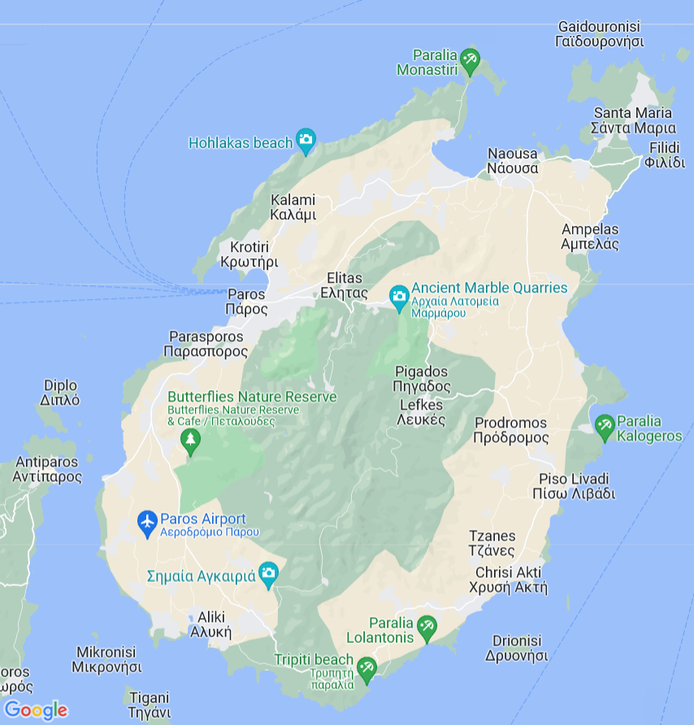

Χρήσιμες πληροφορίες
Υπεραγορές
Τα σούπερ μάρκετ που βρίσκονται κοντύτερα σ' εμάς, μπορούν να βρεθούν κυρίως στην Νάουσα.
Μίνι μάρκετ "Proton"
Σούπερ μάρκετ "Market-In"
Σούπερ μάρκετ "AB"
Σούπερ μάρκετ "Κρητικός"
Αποστάσεις από διάφορα μέρη
-
Νάουσα: 3.5 km
-
Αμπελάς: 5.4 km
-
Μάρπησσα: 12.5 km
-
Λεύκες: 12.9 km
-
Πίσω Λιβάδι: 13.7 km
-
Παροικία: 16.3 km
-
Δρυός: 18.1 km
-
Πούντα: 20.4 km
-
Αεροδρόμιο: 22.8 km
-
Αλυκή: 25.1 km
-
Αγκεριά: 25.8 km
Κοντά στο κατάλυμα
-
Εστιατόριο Si-Paros: 100 m
-
Παραλία της Νησίδας Οικονόμου: 200 m
-
Παραλία απέναντι από το Si-Paros: 350 m
-
Παραλία Σάντας Μαρίας: 900 m
-
Εστιατόριο Δίχτυ: 1 km
-
Παραλία Λάγγερης: 1 km
-
Παραλία Αγίων Αναργύρων: 2.3 km
-
Παραλία Διόνυσος: 2.7 km
Μέρη ενδιαφέροντος
Μουσείο οίνου: 2.3 km
Ενετικό λιμάνι και κάστρο: 3.5 km
Πάρκο Πάρου: 4.4 km
Αρχαία λατομεία: 12.2 km
Μουσείο Γλυπτικής "Ν. Περαντινού": 12.5 km
Λαογραφικό μουσείο της Μάρπησσας: 13.5 km
Φραγκικό κάστρο: 16.3 km
Εκκλησία Εκατονταπυλιανή: 16.3 km
Βυζαντινό μουσείο: 16.3 km
Αρχαιολογικό μουσείο: 16.3 km
Μουσείο κυκλαδίτικης λαογραφίας: 25.1 km
Μερικές παραλίες
-
Παραλία της Νησίδας Οικονόμου: 200 m
-
Παραλία απέναντι από το Si-Paros: 350 m
-
Παραλία Σάντας Μαρίας: 900 m
-
Παραλία Λάγγερης: 1 km
-
Παραλία Αγίων Αναργύρων: 2.3 km
-
Παραλία Διόνυσος: 2.7 km
-
Παραλία Πιπέρι: 4.6 km
-
Παραλία Κολυμπύθρες: 7.5 km
-
Παραλία Τσουκαλιά: 9.5 km
-
Παραλία Μοναστήρι: 9.8 km
-
Παραλία Λιβαδιά: 13.1 km
-
Παραλία Καλόγερος: 14.1 km
-
Παραλία Λογαρά: 16.5 km
-
Χρυσή ακτή: 16.5 km
-
Παραλία Αγία Ειρήνη: 19.7 km
-
Παραλία Βουτάκου: 24.9 km
-
Παραλία Αλυκής: 25.3 km
-
Παραλία Φάραγκα: 26.4 km
